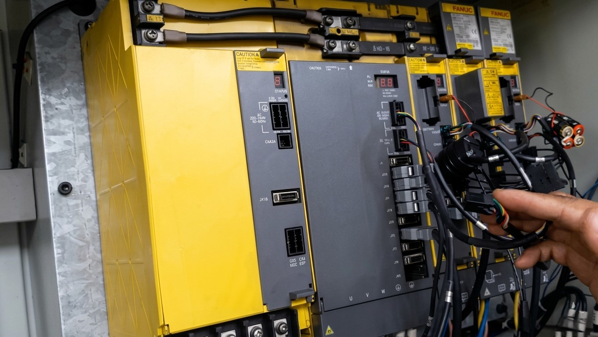

En CNC Systems somos especialistas en reparación de maquinaria industrial CNC, diagnóstico de averías y asistencia técnica urgente para centros de mecanizado, tornos CNC y maquinaria automatizada industrial.
Trabajamos sobre maquinaria industrial de diferentes fabricantes realizando diagnóstico, reparación y asistencia técnica especializada para minimizar tiempos de parada y recuperar la producción lo antes posible.
Las averías en maquinaria CNC pueden provocar importantes pérdidas de producción y tiempos de parada críticos. Por ello ofrecemos un servicio técnico CNC rápido y especializado orientado a recuperar la producción en el menor tiempo posible.
Trabajamos con maquinaria CNC industrial de diferentes fabricantes y realizamos reparación tanto en instalaciones del cliente como en taller técnico especializado.

Diagnóstico y reparación de centro de mecanizado CNC industrial.
Realizamos reparación de centros de mecanizado CNC horizontales y verticales, solucionando averías relacionadas con ejes, servomotores, variadores, husillos, sistemas de refrigeración y controles CNC.
Nuestro equipo técnico trabaja directamente sobre la causa real de la avería para minimizar futuras incidencias y mejorar la fiabilidad de la máquina.
Los tornos CNC industriales requieren una rápida actuación técnica para evitar pérdidas de producción y daños mayores en componentes críticos.
Realizamos reparación de tornos CNC horizontales y verticales, incluyendo sistemas de arrastre, torretas, servomotores, controles y elementos mecánicos.
Una correcta diagnosis es fundamental para reparar maquinaria CNC de forma eficiente. Nuestro equipo técnico dispone de experiencia y equipamiento especializado para localizar averías electrónicas, mecánicas y de automatización industrial.
Analizamos alarmas CNC, parámetros, errores de servo, sistemas de comunicación y funcionamiento general de la máquina para identificar el origen real de la incidencia.
En CNC Systems realizamos reparación electrónica industrial para maquinaria CNC, incluyendo tarjetas electrónicas, fuentes de alimentación, módulos de potencia y sistemas de control.
Trabajamos con equipos FANUC, Siemens, Heidenhain, FAGOR y otras plataformas industriales utilizadas en maquinaria CNC y automatización.
Nuestro servicio SAT CNC está orientado a ofrecer asistencia técnica rápida y eficaz para minimizar tiempos de parada en producción.
Atendemos incidencias urgentes en maquinaria industrial y ofrecemos soporte técnico tanto presencial como remoto según el tipo de avería.
Además de reparación de averías CNC, realizamos mantenimiento preventivo y correctivo para mejorar la fiabilidad de las máquinas y reducir incidencias futuras.
La combinación de mantenimiento periódico y asistencia técnica especializada ayuda a prolongar la vida útil de la maquinaria industrial.
Trabajamos con algunos de los principales fabricantes y controles CNC utilizados en la industria metalúrgica y automatización industrial.
Nuestra experiencia incluye maquinaria equipada con controles FANUC, Siemens, Heidenhain, FAGOR y otros sistemas CNC industriales.
Trabajamos con centros de mecanizado, tornos CNC, fresadoras y maquinaria industrial automatizada de diferentes fabricantes.
Sí. Ofrecemos servicio técnico CNC para incidencias urgentes y paradas de producción.
Sí. Diagnosticamos y solucionamos alarmas FANUC, Siemens, Heidenhain y otros controles CNC industriales.
Sí. Reparamos sistemas electrónicos CNC, drives, fuentes de alimentación y módulos industriales.
Sí. Realizamos mantenimiento preventivo y correctivo para maquinaria CNC industrial.
Ofrecemos asistencia técnica y reparación de maquinaria industrial CNC para empresas industriales en toda España, incluyendo Madrid, Barcelona, Valencia, País Vasco y zonas industriales especializadas.
🛠️ ¿Necesita instalar una máquina CNC?
En CNC Systems realizamos montaje, instalación y puesta en marcha de maquinaria CNC industrial adaptada a las necesidades de cada cliente.
Nuestro equipo técnico ofrece soluciones completas para instalación, traslado y configuración de máquinas CNC industriales.
📞 No dude en ponerse en contacto con nosotros.